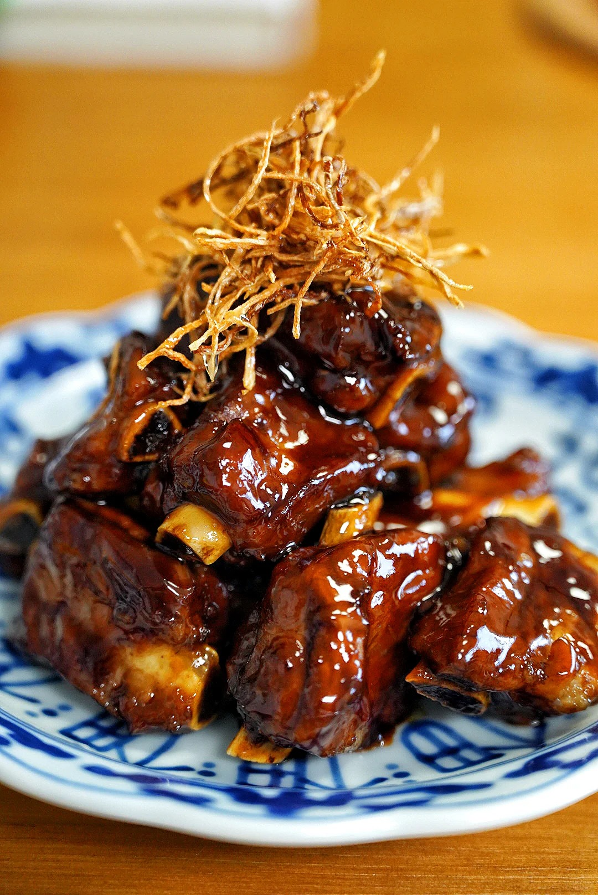
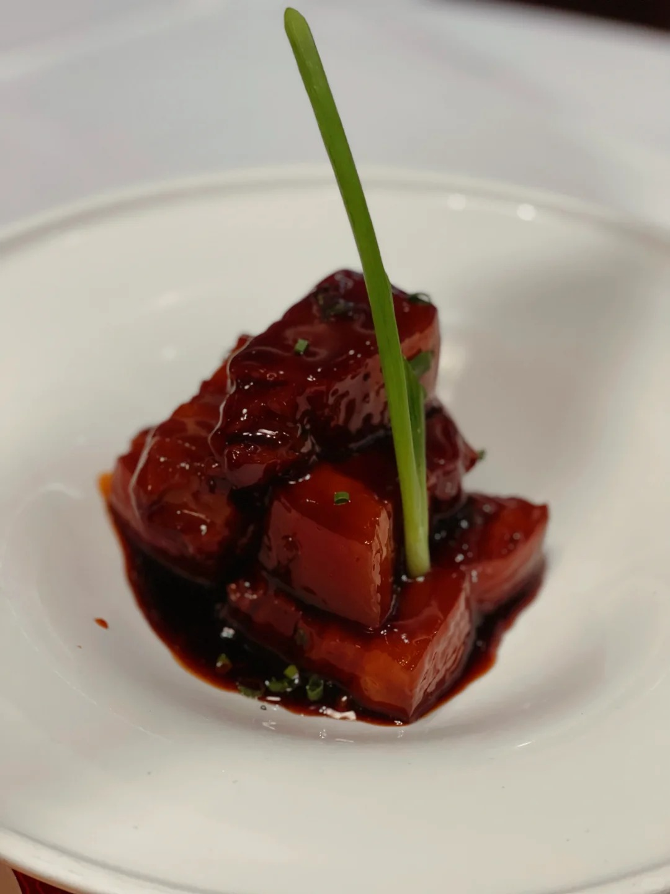

Introduction
Shanghai-Style Braised Pork Belly, known as "Hong Shao Rou" in Chinese, is one of the most iconic dishes of Shanghai cuisine. This sumptuous dish features tender chunks of pork belly braised in a glossy, caramelized sauce with a perfect balance of sweet and savory flavors.
Historical Background
Hong Shao Rou has a rich history that traces back centuries in the Jiangnan region. The dish gained prominence during the late Qing Dynasty and has since become a cornerstone of Shanghai's culinary identity. In traditional Shanghai households, this dish was often reserved for special occasions and family gatherings, symbolizing prosperity and abundance.
The name "Hong Shao" refers to the characteristic red-braising technique that's common in eastern Chinese cooking, where meats are slowly simmered in a mixture of soy sauce, rice wine, and sugar until they develop a deep, reddish-brown color and incredibly tender texture.
Throughout Shanghai's development as a cosmopolitan hub, this dish remained a constant favorite, adapting slightly with changing tastes but always maintaining its essential character. Even as Shanghai cuisine absorbed international influences, Hong Shao Rou stood as a testament to the region's culinary heritage.
Preparation Method
- Ingredient Preparation: Select a piece of pork belly with balanced layers of fat and lean meat. Cut it into 1-inch (2-3 cm) cubes. Prepare aromatic ingredients including ginger slices, scallions, star anise, cinnamon, and bay leaves.
- Blanching: Place the pork belly cubes in cold water with a splash of rice wine and some ginger slices. Bring to a boil and simmer for 3-5 minutes to remove impurities. Drain and rinse the meat under cold water.
- Sugar Caramelization: In a heavy-bottomed pot or wok, melt rock sugar or granulated sugar over low heat until it liquifies and turns amber. This critical step creates the dish's distinctive color and flavor foundation.
- Searing: Add the blanched pork belly to the caramelized sugar and stir to coat each piece evenly. Increase the heat and continue to stir-fry until the exterior of the pork is lightly browned and glazed with the caramel.
- Adding Aromatics: Introduce the ginger, scallions, star anise, cinnamon stick, and bay leaves to the pot. Stir briefly to release their fragrances into the oil.
- Braising Liquid: Pour in Shaoxing rice wine, light and dark soy sauce, and enough water to barely cover the meat. The dark soy sauce provides color while the light soy sauce adds saltiness.
- Slow Cooking: Bring the liquid to a boil, then reduce to a gentle simmer. Cover and braise for about 45-60 minutes, occasionally turning the meat pieces for even cooking and flavor absorption.
- Sauce Reduction: Once the pork is tender enough to easily pierce with a chopstick, remove the lid and increase the heat to reduce the sauce. Stir gently until the sauce thickens and coats the meat with a glossy glaze.
Tasting Notes
The hallmark of perfectly prepared Hong Shao Rou is its contrasting textures—the skin should be slightly gelatinous, the fat layer meltingly tender, and the lean meat should retain just enough firmness to provide substance. The first bite reveals the complex interplay of sweet and savory notes, with the sugar and soy sauce creating a deep umami foundation, accented by subtle hints of star anise, cinnamon, and ginger.
The sauce should have a rich, caramelized sweetness balanced by the savory depth of soy sauce. While remaining distinctive, the spices should complement rather than dominate the pork's natural flavors. Traditional Shanghai-style Hong Shao Rou tends to be sweeter than versions from other regions, reflecting the local palate's preference for subtly sweet flavors in savory dishes.
The dish is typically served with steamed rice, which provides a neutral canvas that soaks up the rich sauce. For a complete traditional Shanghai meal, it pairs beautifully with leafy green vegetables stir-fried with garlic, offering a fresh counterpoint to the richness of the pork.
Gallery
